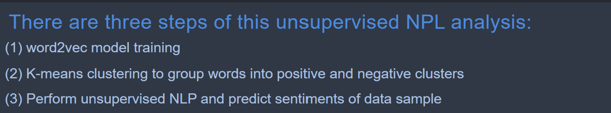
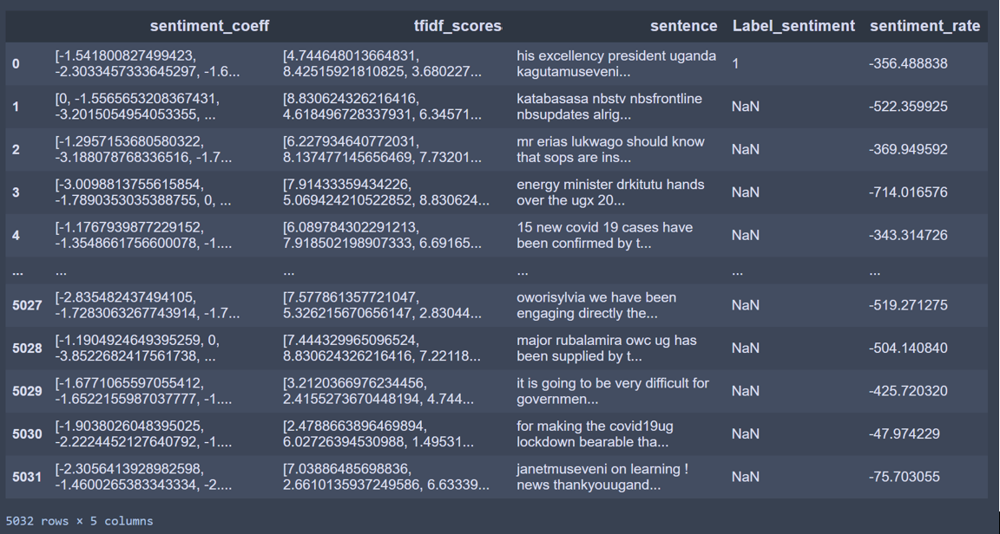
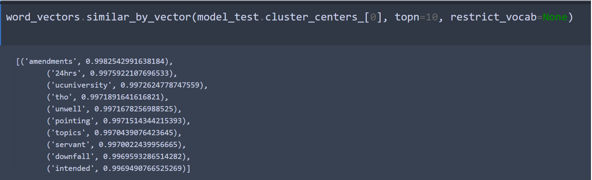
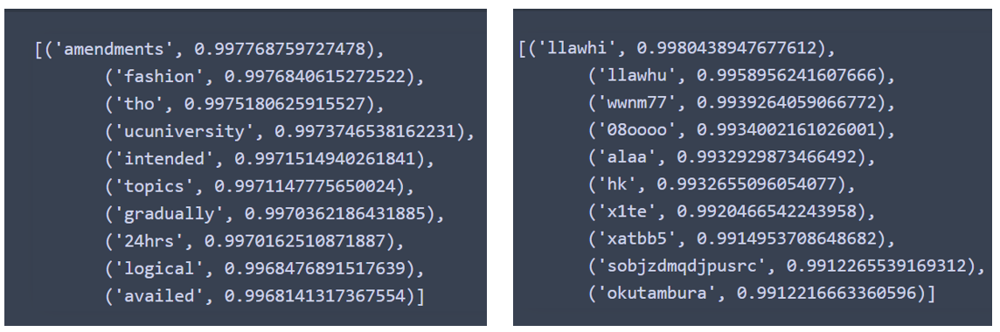
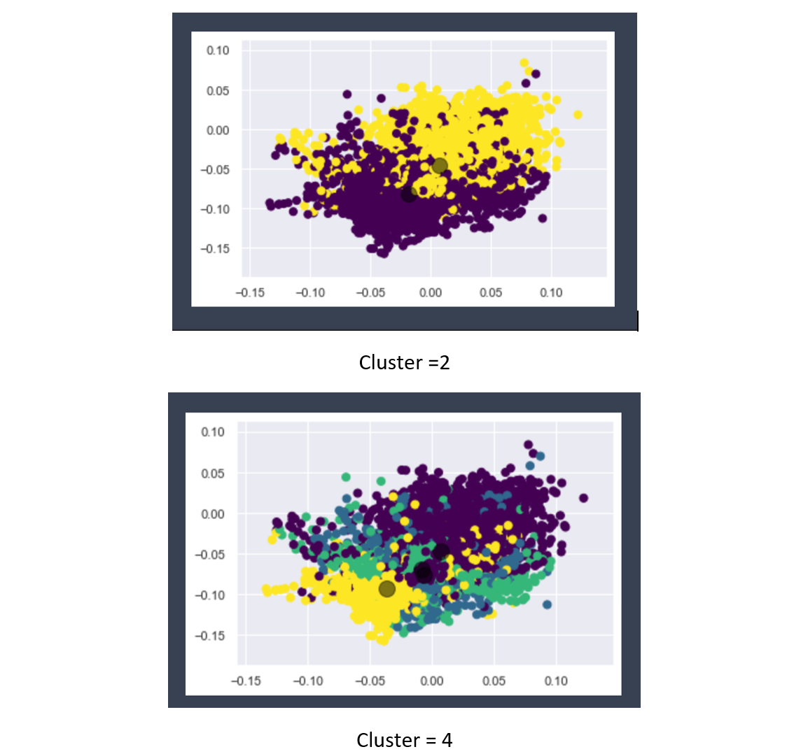

Review: Four Sentiment Analysis Methods in Python (2)
June 1, 2020 By Joyce Jiang

Since we couldn’t reach a satisfied accuracy (around 75%) of the three methods above, we decided to test an unsupervised model, which is a non-labor-intensive way for conducting a sentiment analysis. I spent some time to find a REAL unsupervised model because most of the “unsupervised sentiment analysis” you could find online actually only used an unsupervised NLP tool word2vec. They are “fake” unsupervised sentiment analysis because you still need to label data manually to feed the algorithms, which did not match with our budget and our purpose of exploring a truly unsupervised method.

In the end, I found one tutorial on rafaljanwojciki's GitHub, you can check it out under his repo Unsupervised-Sentiment-Analysis. The main idea of this method is to use word2vec to vectorize all words in your text and then perform a K-means cluster analysis to categorized all words into two groups: positive and negative. With this categorization, you will be able to label all words with positive and negative sentiments and create a sentiment dictionary from there. The author of this method also performed a TF-IDF [1]function to vectorize each document based on the importance of the words. Finally, you can use this dictionary to tag the words in each document (Twitter post) and convert it to a vector, and use a dot product in linear algebra to calculate the score of each document.
Dot Product
It may sound very abstractive right now, but if you follow my scripts step by step, which comprised three separate Jupyter Notebooks (1)Unsupervised (2)K-means (3)Prediction, you will find it more understandable.

I thought this is really a genius way to perform an unsupervised sentiment analysis, and it works quite well even with the Polish content in rafaljanwojciki's GitHub. However, I failed to build a valid model in the step of clustering, which I will explain more about why I failed and what you could learn from my failure.

My findings:
In the clustering process, we were supposed to received two clusters: positive and negative ones. This could be done by checking the word list in each cluster to determine the sentiment of it. For instance:

This one looks like a negative cluster. However, when I clustered all words into two categories, they were not grouped by negative and positive sentiments, instead they were grouped by the English and non-English content:

At first, I tried to find a way to modify the clustering result. When I checked the actually cluster graph, I’m also not satisfied with K-means clustering by looking at its visualization, so I attempted K-means clustering multiples times with cluster=3 and cluster =4. The visualization did not look better and I still didn’t get a result of separating negative and positive words.

I started to realize that it is not necessary for K-means to only cluster all words based on positive and negative sentiments. I reached out to an NLP expert and was able to refine my clustering based on his suggestions:
- Customize your stopwords list: There are some debates about whether we should use default stopwords list for sentiment analysis and to what extend should we develop our own customized stopwords list. The answer is –if you want a reliable sentiment analysis model, in most of the cases you should customize you own version of it.
- Clean the non-English words if you don’t have a way to accurately translate them to English.
- Only leave adjectives, adverbials, and nominal adjectives (such as excellency) for training word2vec, so the sentiment dictionary will only tag those words in the document.
- Remember to clean the negation words from stopwords list if you are not writing you own version, and compute the sentiment score by Score * (-1)^n to get an accurate sentiment for a document.
- It’s your discretionary decision to use TF-IDF to assign an importancy score for each word or not.
The explanation is that there are so many characteristics of a word that could be more dominated than the sentiment (such as the language) under different contexts, so if we simply cluster all words without the cleaning process, we may not exactly get a cluster result based on sentiments.
Strength
It’s a non-labor-intensive way to have algorithms automating the word labeling process. The method is repeatable and more flexibly. Word2vec would be able to capture the contextual information of a word at the same time.
Weakness
Even more challenging for users who do not have prior knowledge of advanced coding or NLP techniques. It increases users’ work in data preprocessing, such as excluding non-English content, and filtering adjectives and adverbials. The users may test different combination of word preprocessing to get a satisfied result.
Additionally, for all unsupervised NLP, we need to feed the model with a large amount of data. For me, it’s 40K pieces of tweets of Ugandan COVID19-related content. In some of the cases, we may not be able to find that much of training data for a word2vec model.
This article covers the review of unsupervised method word2vec + K-means clustering in sentiment analysis. You can check out the reading of supervised method Vader, TextBlob, and NLTK at
Review: Four Sentiment Analysis Methods in Python (1)
[1] *TF-IDF: a model to measure the importance of each word in a document
William Scott gives a clear explanation of what TF-IDF is. In his blog on Medium, he explains how the model calculates the importance of a word based on its frequency and the document length by using a log computation.